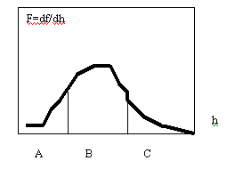

В программе на вебе бабочка имеет возможность мгновенно остановиться и начать движение в другую сторону. Но в природе есть инерция, для учёта которой нужно следить за историей событий.
Рабочий дневник 1998e
23 сентября 1998
Не нужно бояться, что максимально похожих ситуаций будет слишком мало. Допустим, суммарный вес узнавания Wmax имеет мало прототипов в прошлом, или вообще встречался всего один раз и то без успеха. А величина W >Wmax-1 встречается много раз. И опыт поведения в ситуациях Wmax-1 почти годится для Wmax. Поэтому нужно ослабить порог W. Точное значение Wmax встречается редко, а приближённое значение Wmax-1 гораздо чаще. Поэтому опыт Wmax-1 не пропадёт.
С другой стороны, если какие-то каналы всегда "узнают", то есть выдают шум, то точное узнавание приводит к неоправданному вниманию к мнению этих каналов. Надо уменьшить порог узнавания, например, до 0.9 или 0.99, и обязательно уточнять веса каналов пока плохие каналы сами не выпадут из внимания.
Механизм свободы воли.
"Если A, то B". Решение принимается в зависимости от обстоятельств. Практически выбор решения происходит ассоциативно. При этом понятие воля не имеет технического значения. Однако обстоятельства интерпретируются субъективно. Можно подумать и склониться к одному решению. Можно подумать ещё, увидеть в объективно тех же обстоятельствах новые детали, из-за которых эти обстоятельства кажутся другими, такими, что из них следует другое решение.
Впечатление о свободе воли возникает потому, что человек помнит, что он мог принять одно или другое решение в объективно одних и тех же условиях, и он свободно принял одно из решений.
У бабочки такой механизм не внедрён. У неё нет различия между обдумыванием и осуществлением идей. Что на уме, то и на языке. В этой программе не использован алгоритм обдумывания без исполнения , которое происходит, например, если орган реагирует не на каждую команду канала, или если в канале возникают символы для автоматизации повторяющихся команд.
Механизм "нового".
В программе можно заменить случайные прогнозы редкими сбоями в памяти. Тогда творчество будет основано не только на новых действиях, но и на неточных воспоминаниях. Случайные нарушения в памяти ведут и к творчеству (новый ход) и к забыванию (совсем ни на что не похоже, или вспоминается то, чего не было). Мозг может поддерживать специальный канал узнавания. И то, что долго не узнавалось можно стирать. Но не то, что имело малый успех!
Подбор весов при помощи отложенного анализа узнавания разными каналами должны быть обычной работой мозга. Надо внедрить этот механизм поскорее.
Надо отбирать похожие данные независимо от их успешности. И уже после отбора использовать те максимально успешные, по которым будет выполняться прогноз. Но менее успешные события не отбрасываются, а используются для отслеживания наиболее похожих событий далее. Вероятность успеха равна числу успехов, делённому на число похожих событий.
Таким образом, мы не потеряем путь от начала узнавания до начала успешного поведения. Можно давать преимущество тем событиям, которые узнавались на предыдущем ходу . Чем длиннее история узнавания, тем она важнее (а особенно, если регистрируются не состояния, а изменения состояний): слова могут состоять из десятка букв. Успешность используется для прогноза, а похожесть для узнавания (для слежения за событиями). Нельзя отбрасывать мало успешные события, и даже события с минимальным успехом (неудачные). Весь список похожих событий используется для прогноза.
Строго говоря, нужно максимизировать удовольствие на некотором интервале в предполагаемом будущем, а не "успех за время dt". Поэтому алгоритм поиска прототипов для прогноза выглядит так
- Находим максимально похожие события.
- Начинаем поточечный процесс сравнения будущих удовольствий .
- Сохраняются те события, у которых суммарное удовольствие за одинаковое время максимально. Распределение удовольствий, нарастание или равномерность не имеют значения.
- Для того чтобы ускорить расчёт и учесть возможный будущий успех вместо немедленного успеха можно вести канал успех , который хранит суммарные удовольствия за некоторое время dt. Теперь этот интервал имеет смысл минимального, а не максимального разрешения по времени. Тогда проводится не поточечное, а поинтервальн ое сравнение.
- Чем больше dt, тем лучше для скорости, но хуже для подробности анализа.
- При таком подходе может случиться, что в начале сравнения успешность всех событий минимальна. Тем не менее, этот путь выводит на успешное будущее. Путь от неудачного поведения к правильному поведению - не теряется.
Автоматизация в битовых каналах.
Для начала битовый канал выполняем в виде байтового канала с контролируемой длиной команды. Датчик содержит список команд и включает в него то, что канал часто определяет, как " последующая команда не имеет вариантов, то есть во всех вариантах прогноза одинакова " и имеет очень длинное узнавание - больше, чем позволяет случайное совпадение. Во время исполнения длиной команды датчик не реагирует. Или не реагирует, если внешние условия правильно предсказаны. В любой момент, если сенсор обнаружит ошибку предсказания, то он может начать корректировать неиспользуемые команды канала.
Обратимо автоматизируется только вход от сенсоров и эффекторов. Выход эффекторов прервать нельзя! Выходы эффекторов могут быть не прерваны, а переучены сознательным путём или путём творческого поиска.
По мере накопления шаблонов поведения, ассортимент команд канала увеличивается.
Нужно написать согласованное описание полного алгоритма с учётом всех механизмов.
В чём трудность символьного прогноза.
Допустим, есть 100 вариантов успешных прогнозов Si. Надо выбрать из них не функцию поведения B(t), а только одну точку Bi. Можно построить график Si(Bi). Если B - аналоговая величина, то можно аппроксимировать этот график (полиномом) и подобрать максимально удачную величину B, обеспечивающую максимальный успех S, лучше, чем прежний. Но если поведение символьное, то нельзя построить такой график и нельзя выбрать "промежуточный" символ. Нет такого символа, да они и не упорядочены. Приходится выбирать то же самое поведение, которое раньше привело к максимально успешному результату. Но можно случайно выбрать и другой символ для обеспечения случайного творческого поиска.
Величину успеха Si (а лучше вероятность успеха или мат. ожидание успеха) можно использовать, как вес. Но о нормировке этого веса надо подумать. Какова должна быть разница между минимально успешным и максимально успешным поведением? Почему суммарный успех за время dt равен сумме удовольствий, а не какой-то другой функции?
Какова доля и роль случайного шага? Если вероятность выбора хода (варианта поведения) пропорциональна успешности этого хода, то в символьном канале будет доля случайного выбора менее удачных ходов . Следовательно, если удалить случайный ход, то способность к обучению и творчеству сохранится. Случайность есть в мире.
Важно следить за историей событий.
В программе на вебе бабочка имеет возможность мгновенно остановиться и начать движение в другую сторону. В природе есть инерция, для учёта которой нужно следить за историей событий. Алгоритм отслеживания похожих событий должен беречь продолжительные сценарии, но и не хранить лишнего, если имеются долгие хорошо узнаваемые процессы, которые в обозримом будущем не ведут к успеху.
Важность 8 битовой истории - это почти тоже, что 8 битовое символьное обучение - весьма трудная задача. Для того чтобы обучение было всё же возможным, нужно, чтобы каждый удачный бит улучшал качество поведения, и чтобы типичные цепочки событий (шаблоны) часто повторялись. Это зависит не только от мозга, но и от устройства органов.
- Имеем список похожих событий Event. На очередном шаге находим ещё похожие события. Некоторые из них уже были похожи. Они более важны. Некоторые найдены впервые. Для учёта истории присвоим событиям вес. Этот вес может храниться в отдельном канале история . На каждом ходу вес события увеличивается на 1. То есть вес равен числу шагов. Новому событию присваивается вес 1. При не узнавании имеющегося в списке события, его вес уменьшается вдвое. Если вес <1, то событие исключается. Здесь надо учитывать вес канала.
- Из всех похожих событий выбираем в отдельный список наиболее похожие с уровнем 0.5 или 0.9. Считаем, что они одинаково похожи. При этом список всех похожих событий сохраняется.
- Среди этого сокращённого списка выбираем наиболее успешные (уровень 0.5) события на интервале dt. Dt - это среднее время жизни события . В течение этого времени высока вероятность повторения успешной истории. Этим событиям присваиваем вес 1 и отбираем из них те, которые являются лучшими (с уровнем 0.5) на следующем интервале dt. Веса этих событий увеличиваем на 1. И так далее, пока не останется одно событие.
- Делаем прогноз с учётом веса.
Невозможная задача : Бабочка получает удовольствие от касания цветка, только если она перед этим нажала на кнопку. Если от кнопки до цветка более 10 ходов, (например, 100), то обучиться правильному поведению случайно нельзя.
Логика бабочки:
- вижу цветок
- хочу получить удовольствие
- лечу к цветку
- касаюсь цветка и не получаю удовольствия
- пусть даже вспоминаю, что было получено удовольствие, когда было касание кнопки перед цветком
- лечу к кнопке
- через три хода вспоминаю, что когда-то получила удовольствия от касания цветка. Шаги не могут точно повториться, поэтому ассоциация в 10-20 ходов обязательно разорвётся и история с кнопкой будет забыта.
- Лечу к цветку. Делаю разгребающие движения лапами. :)
Возможные выходы из положения:
- Ассоциативные воспоминания по очень коротким процессам: процесс переходит в процесс.
- Обобщение. Какие-то каналы должны обрабатывать только обобщения без подробностей.
- Короткие ассоциативные образы процессов (слова) в малозначащих каналах, например в канале речи .
Пример детальных действий : лечу влево, вижу цветок вверху, чувствую касание, лечу вправо, нажимаю кнопку, лечу вправо, не чувствую касания, …
Пример обобщённых действий : лечу к цветку, нахожусь на цветке, лечу к кнопке, испытываю удовольствие…
В канале обобщение история с нажиманием кнопки получится короткой и поэтому ассоциация не будет потеряна. Как синхронизовать каналы обобщений? Это не ясно.
Задача с кнопкой разрешима, только если само попадание на цветок освоено до автоматизма. То есть, бабочка воспринимает задачу попадания на цветок, как 1 ход (одно действие в канале обобщения).
Естественное разделение каналов . При продолжительной истории узнавания событие должно получать больший вес. Его узнавание не случайно, а закономерно. При очень длительном узнавании событие (то есть, процесс - цепочка событий) становится "достоверным" и может узнаваться каналом независимо от других каналов. Вот где возникает полезная замена синхронности ассоциацией!
Если канал узнаёт очень длинную историю, то это не может быть случайным. Это наверняка та же самая история, которую сейчас узнают и другие каналы. Синхронность можно даже и не поверять! И это событие (процесс) можно смело вносить в словарь в каждом канале независимо.
Итог. Бабочка сделана весьма оптимально. Дальнейшая проблема ясна. Требуется создать циркуляцию не только непосредственных ощущений, но и обобщений , которые должны быть императивными , то есть должны возбуждать нужные конкретные ассоциации. Не ясно, что такое обобщение, но важно, что легко обучаема краткая история , а надёжно узнаваема длинная история .
История больше всего нужна потому, что она позволяет не упустить внимание (то есть, похожие события), так как такие события объективно имеют (протяжённую во времени) причину. Для принятия решения о похожести история тоже важна. Особенно если это смысловой процесс (фраза). А для физического процесса достаточно истории из трёх точек (а не одной или двух точек, как сейчас), определяющих вторую производную. Кроме того, длинная история должна повысить вероятность вспоминания нужного процесса через последовательность причинно связанных временных ассоциаций .
Возможно, переход к потокам обобщений требует перехода от временной синхронизации к ассоциативной или событийной синхронизации. Смысл асинхронных каналов в том, что они предсказывают что и в каком порядке произойдёт , а не когда произойдёт .
Развивающаяся внутренняя семантика. Между датчиком и каналом находится буфер-словарь. Канал подаёт команду B. Буфер видит, что предыдущая команда была A. Он проверяет, есть ли в словаре команда AB? Если нет, то добавляет её в словарь и расширяет список команд. Список команд ограничен и устроен как основной протокол с вытеснением и регенерацией команд. Конец списка стирается. Только что использованная команда перемещается в начало списка. Если канал не успел применить новую команду или слишком долго не применял какую-то команду, то она исчезает, так как оказывается в конце списка.
Если канал подаёт команду AB, которую буфер недавно создал, то буфер выполняет деталировку этой команды для датчика, то есть последовательно выдаёт команду A, а затем - B. Всё это время буфер не воспринимает входящие команды канала. Как только исполнение команды AB завершилось, буфер принимает очередную (текущую) команду канала. Если это команда C, то буфер начинает её исполнять и заодно проверяет, нет ли в списке команды (AB)C? И т.д.
Сон. На время исполнения длительных автоматических команд некоторые каналы теряют связь с реальностью. А что будет, если отключить от датчиков все каналы (сон)? Бабочка будет продолжать накапливать (субъективный) опыт. Но если она не получает при этом реального (химического) удовольствия, то этот опыт при дальнейшем анализе не пригодится, и будет считаться неудачным. А если реальное химическое состояние во время сна является нормальным (не хуже и не лучше, чем в среднем), то такой опыт может оказаться успешнее некоторых эпизодов из реальной жизни. Поэтому некоторые длительные сценарии поведения, проигранные во сне, могут ассоциироваться с короткими процессами (неточными, выдуманными сценариями). Таким образом создаются новые короткие ассоциативные обозначения, до которых нельзя было догадаться в период бодрствования. Длинные ассоциации тоже возникают, но они не могут быть использованы, и быстро забываются.
Сон не запоминается, потому что события, произошедшие во сне, и даже их малореалистичные детали, позже не узнаются. Воспоминание - это ассоциативная цепочка от текущей реальности к прошедшей. Такой цепочки между сновидением и реальностью нет. Но по этой же причине можно во сне вспомнить предыдущий сон.
Длительное планирование . Чтобы догадаться, что после месяца хорошей работы будет получена зарплата, надо 100 месяцев из 100000 случайно хорошо поработать. Но до человека идея о хорошей работе доходит до начала работы.
Пусть обычный машинный такт равен 0.1 секунды. Если бы ассоциативно короткая идея (слово), обозначающее хорошую работу и идея зарплаты проигрывались в каком-то канале за время порядка 0.1 секунды, то такое умозаключение было бы возможно.
Для этого нужен или специальный канал обобщений, или постепенное накопление всё более коротких (ёмких) ассоциаций в произвольных каналах. Например, в канале речи.
Как можно сохранить ассоциативное давление длительного плана? Крупные (обобщённые) блоки действий могут ассоциативно следовать один за другим без привязки ко времени. Но это требует новой архитектуры. Другой способ состоит в том, что планируемые действия постоянно прокручиваются в сознании в обычном (физическом) темпе проговаривания или реального исполнения. Точка исполнения детализируются (разворачивается из слов в действие) и перемещается в будущее по мере исполнения шагов плана. При этом детальное обдумывание ассоциативно гуляет вперёд-назад по времени в окрестности текущего шага исполнения. Такой способ хорошо работает при достаточной автоматизации. Потому что автоматизация снижает ответственность продумывания. Оно не обязано сразу же воплощаться в действие.
05.10.98 Внешняя семантика
Длительное планирование, удержание плана в сознании возможно двумя способами:
- При полной автоматизации процессов. Тогда любые действия и ощущения кодируются короткими командами. Короткая, доступная для обработки и для усовершенствования последовательность команд фактически обозначает длительный процесс. Темп исполнения сжатых команд в принципе может быть более медленным, чем темп реальных, подробных команд.
- При возникновении коротких ассоциативных цепочек команд в маловажных каналах. Например, мы можем говорить во время движения. Темп речи и движения остаются естественными. Речь - это маловажный канал для движения. Ассоциации речи с движением слабы. Они становятся важными, только если и в других каналах возникают подходящие ассоциации. При этом речь (или внутренняя речь) может стимулировать нужные ассоциации, так как сам язык организован логически более строго, чем прочие индуктивные каналы.
Именно речь не обязательна. Человек может оперировать сжатыми ассоциациями при помощи языка жестов или рисунков, а также при продумывании жестов и рисунков. Важно, чтобы существовало достаточно большое количество каналов, которые не связаны жёстко с жизненно важными действиями.
Можно проверить этот механизм на бабочке. Для этого надо дать ей речь и слух (звуковой или символьный) или пусть она зажигает разные фонарики и видит их. Можно специально включать фонарики, чтобы выработать у неё нужные ассоциации. При этом автоматизация в каналах тоже не повредит. Оба механизма могут работать вместе. Добавляем к бабочке лампочку. Она может зажигать и видеть её (плюс 2 канала). Но я тоже могу зажигать её, пронося над ней мышку или нажимая клавишу. Так можно передать бабочке символы для её действий. И можно наблюдать за её творчеством. Важно, что лампочка не важна для выживания.
Механизм продумывания во время автоматического исполнения команд, может быть, отсутствует в живом сознании! То есть он полезен, но не необходим. Для создания сжатых образов достаточно внешних ассоциаций между непосредственно воспринимаемыми процессами. Короткий процесс (событие) ассоциируется с длинным процессом. Так как внешний мир богат на процессы, то эта цепочка приводит к созданию очень коротких символов для очень длинных процессов. И теперь обдумывание может происходить в терминах и в точном темпе коротких символов. На самом деле возникают как более короткие, так и более длинные ассоциации между процессами, но для продумывания, для более эффективного мышления используются короткие.
Например, мы мысленно проговариваем слова при обдумывании. Слова - это прямое управление мышцами в реальном темпе. Но каждое слово может ассоциативно нести продолжительный смысл.
Как технически короткое слово может ассоциироваться с продолжительным действием? - Путём повторения во время этого действия. И путём запуска ассоциативно связанной цепочки процессов.
В результате обучения слова нагружаются смыслом. В математике такое нагружение происходит умышленно. То есть "проговаривание в уме" происходит не на фоне автоматического реального проговаривания, а само по себе в своём темпе, в таком же темпе, как и при разговоре вслух. Поскольку я слышу себя, а также "слышу" через внутренние нейронные связи своё мысленное проговаривание, то оно может восприниматься неавтоматически и представимо осознаваться через восприятия органов чувств, то есть через ощущения. Обдумывание осознаётся как внутренняя речь.
Если я делаю одно действие и думаю о другом, то это происходит в разных органах: обычно продумывание исполняет орган речи. То есть невозможно, чтобы я проговаривал одновременно два потока слов. А поочерёдно можно. Идти и думать можно, а идти вперёд и одновременно назад нельзя.
Поскольку думать здесь означает "говорить про себя", то это действие. Можно топать ногой и одновременно махать рукой. Формально (технически) это то же самое, что продумывание.
Допустим, у бабочки есть голос. Она может одновременно смотреть, двигаться и звучать. Если бабочка снизила громкость звука так, что мы её не слышим, но не перестала произносить звуки, то это очень похоже на продумывание в словах. Произнесение про себя - это несущественная техническая деталь.
Если звуки ассоциативно связаны с движением и зрением, например, звуки исполняют роль команд, то в результате такого проговаривания бабочка может пререйти к другому движению (к другому решению о том, как двигаться). Это движение можно трактовать, как обдуманное (продуманное). Если эффектор ассоциативно не связан с проговариванием (например, удары сердца), то никакое продумывание не поможет изменить это действие. А если связан, например, осознаваемое движение руки описывается в словах (и визуальных образах), то продумывание (без движения) может подготовить к нужному движению.
Технически смысл этой подготовки состоит в усилении ассоциативного императива . Продумывая действие, мы увеличиваем количество готовых к исполнению ассоциативных образцов, увеличиваем вероятность ассоциативного выбора нужных действий и возбуждаем другие нужные и желаемые ассоциативные связи.
Второй контур . Выход Generalization можно считать физическим сигналом и подать на специальный канал. Тогда возможны ассоциативные переключения между крупными блоками .
08 октября 1998. Отключение Wish.
Сознание - это способность к самообучению. Можно ли отключить эту способность в моём алгоритме и при этом сохранить прежнее выученное поведение?
Можно ли сохранить разумное поведение, но при этом не иметь сознания (осознавания себя). Может быть, для этого достаточно отключить сигнал Wish? При этом веса фиксируются в соответствии с достигнутым уровнем обучения. Никакой новый опыт не станет полезным. Сохранится ли осознавание при отключении Wish? Вряд ли. Это похоже на смерть - безнадёжная недостижимость всех желаний.
- Если зафиксировать Wish=min (полное несчастье, ни одно желание не удовлетворено), то происходит выбор поведения в условиях катастрофы , то есть - поиск удовлетворения наиболее жизненно важных желаний. Это поведение может выглядеть агрессивным, буйным, безумным, но не разумным. Во всяком случае, пользователя такой системы её поведение не устроит. Слабое безвольное самосознание некоторое время сохраняется, так как поведение не совсем автоматическое.
- Если зафиксировать Wish=max (все желания удовлетворены), то произойдёт быстрое зацикливание на любых последних поведениях (Эпилепсия), так как прежнее поведение с реальными значениями Wish будет казаться недостаточно удовлетворительным. Осознавание исчезнет сразу, так как наступает чисто моторное поведение.
- Среднее или среднестатистическое Wish. Новое поведение, несмотря на его накапливающуюся неразумность (несуразность), быстро вытеснит прежний не самый успешный, но реальный опыт. Прежний успешный опыт некоторое время (до естественного забывания) сохранится. Но со временем он попадёт в протокол с равными Wish, и система не сможет установить, что один опыт успешнее другого. Сознание и полезное поведение постепенно разрушаются. Осознавание сохраняется, но исчезает интерес к жизни (дифференциация потребностей).
- Если оставить прогнозируемые значения Wish, то быстро наступит зацикливание на самообмане (Шизофрения). Впечатление о собственной разумности некоторое время сохраняется, пока не наступит чисто механическое повторяющееся (шаблонное) поведение.
- Wish не отключается, но создаётся провал в памяти. Например, опыт в 10000 шагов фиксируется, а входной опыт в 1000 шагов остаётся динамичным. Тогда в динамичном протоколе действует нормальное (ослабленное) сознание со сниженными способностями к запоминанию и к обучению. Прежний опыт может использоваться, если это не требует элементов обучения или запоминания нового. Это выглядит как ослабление умственных способностей.
Как добиться, чтобы бабочка научалась всё лучше и лучше, пока не достигнет самого лучшего поведения? При слишком сильной инерции невозможно поведение без покидания цветка. Следовательно, если достижение самого лучшего поведения и возможно, то мы не всегда можем это понять из-за различной физики нашего и искусственного мира. Кроме того, органы чувств и действий бабочки тоже могут иметь принципиальные ограничения.
Почему бабочка после достижения цветка продолжает лететь дальше до самой границы окна? Она не чувствует расстояния. Поэтому по мере приближения к цветку она ускоряется, но иногда меняет направление, и тормозится, так как своевременное торможение когда-то помогло ей дольше удержаться на цветке. После попадания на цветок она могла бы резко повернуть обратно, но такое поведение никогда не приводило к успеху, так как при этом она улетает от цветка. Итак, физическая инерция и ущербность органов (например, бабочка не может ухватиться за цветок) приводят к тому, что самое лучшее, возможное в её мире поведение, на наш вкус совсем не кажется уверенным и полезным.
Чайка, хотя и не может (как и моя бабочка) остановиться в воздухе, но может схватить рыбу. Орган хватания решает многие жизненные задачи.
Мысленный тест на качество алгоритма : Возможно ли за бесконечное время обучить бабочку без колебаний лететь точно к цветку? Кажется, нет. Так как при самом правильном поведении у бабочки всё равно будет накапливаться неудачный опыт, а случайное поведение цветка создаст долю необоснованного успешного опыта.
Алгоритм выбора хода таков, что бабочка может предпочесть
(I) 7 безумных ходов вблизи цветка, завершающихся попаданием на цветок,
(II) 100 ходам, во время которых бабочка всё время приближалась к цветку по прямой, преодолев огромное расстояние.
Но за большое время поведение (II) статистически накопится, так как оно надёжнее обеспечивает успех. Кстати, в окрестности любой точки поведения (II) имеется много точек с успешным поведением, так как это один и тот же успешный процесс. Учёт продолжительной истории повышает узнаваемость регулярного поведения (II).
16.10.98 Узнавание и идентификация события.
Допустим, в данный момент времени на всём протяжении протокола одновременно узнаётся 148 похожих событий. Это спектр опыта. Все эти 148 моментов одинаковы , и означают "событие А" (один и тот же процесс). Но у них может быть различное будущее, и они могут несколько различаться по качеству совпадения с текущим моментом. Если какой-то процесс (последовательность событий) совпадает с текущим процессом уже 10 ходов, а другой - только 2 хода, то первый узнаётся точнее. Критерий узнавания на каждом ходу должен быть меньше 1, например, 0.90. При подборе весов будет учитываться этот порог. Но при этом немного теряется статистика.
В другой момент времени узнаётся другое событие - В. Часть точек узнавания - это продолжение того же процесса А, а другая часть - новый процесс . Продолжение - это неразрывное узнавание, а новый процесс - если точка узнавания возникла после узнавания первого события.
Весь протокол можно трактовать, как единый процесс. Но можно поискать в нём типичные, часто повторяющиеся, легко узнаваемые фрагменты - это одно и то же, так как легко узнаваемые процессы становятся типичными из-за того, что они часто субъективно повторяются. Это может быть связано с устройством механизма поиска. У продолжительных процессов больше шансов стать легко узнаваемыми. Кстати, так субъективно формируются объекты или шаблоны или обобщения.
Признаком того, что текущее событие (процесс) продолжается, является узнавание N+1го хода. Но если темп события изменился - это не повод строго отвергать некоторые узнаваемые события. Чтобы мягче относиться к темпу, можно проверять N+1й ход, а если он не совпал, то проверять ходы N и N+2. Какой лучше совпал с текущим ходом, тот и считаем продолжением текущего события. Это опасный алгоритм. Если узнаётся не N+1й ход, а соседний, то вес узнавания не повышаем. Важно не выбросить событие.
Можно ввести уровень узнавания, требуемый для учёта события при прогнозе. Например, если уровень узнавания h<1, то отбрасываем событие, а если h >2, то учитываем событие при прогнозе. В интервале 1<h<2 события хранятся, но не учитываются. Что будет, если не учитывать при узнавании последние 5 ходов? При такой технологии надо пересчитывать историю для вновь найденных точек. Можно даже отбраковывать события, если история снижается заметно ниже существенной . Существенная история - это такая, увеличение которой уже не улучшает прогноз.
При выборе хода исследуется зависимость качества будущего от данного хода. История и последующие ходы не выбираются, а только помогают уточнить ход. Выбирается такой ход, который обеспечивает максимальную вероятность лучшего будущего - максимальную величину математического ожидания успеха. При этом надо учитывать, что продолжительное узнавание процесса маловероятно и должно иметь повышенный вес.
Для того чтобы не злоупотреблять случайными ходами , можно выбирать ход с вероятностью, равной вероятности успеха (мат. ожиданию успеха) при таком ходе.
Шаг просмотра протокола di можно уменьшать или увеличивать так, чтобы число узнаваемых событий было 10 … 30.
Учёт истории. При узнавании увеличиваем вес события на 1. При не узнавании - уменьшаем вдвое. Если вес становится меньше единицы, то отбрасываем событие. В этом случае строгость узнавания несколько снижается, и случайные помехи не будут иметь фатальных последствий.
Как разделить процессы?
Пусть бабочка уже освоила правильное поведение. Как по её реакции абстрактно установить, что "сейчас происходит определённый процесс?" Сколько всего может быть различных процессов? Чем отличаются общие процессы от процессов в каналах? Можно ли найти общие процессы не изучая содержимого каналов? Такое изучение методически запрещено. Что такое процесс?
- Есть узнавание: узнаётся много событий одновременно - один процесс.
- Нет узнавания: узнаётся совсем мало событий, например 0, - смена процесса.
Сами данные не имеют значения. Важно, что они повторяются и поэтому узнаются. Как установить, что "это тот же самый процесс"? Если в момент хорошего узнавания запомнить спектр процесса (совокупность узнаваемых событий), то по этому спектру можно будет потом узнать такой же процесс в тот момент, когда он будет в той же стадии. Если допустить сдвиг всех точек спектра на одинаковое число шагов, то можно узнать тот же процесс в другой стадии. Этот способ можно использовать в одном канале, или во всех каналах одновременно. Такой спектр зависит от конкретного персонального опыта.
Что такое узнаваемый образ, узнаваемое событие, узнаваемый процесс?
Каждый канал, как и весь орган и весь организм, принимает и запоминает поток восприятия - те непосредственные данные, которые выдают сенсоры и генерируют творческие каналы.
Этот поток можно трактовать как единый объективный процесс. Могут существовать каналы или структуры каналов, которые выдают команды и принимают их обратно без цензуры. Эти данные субъективны. (Придумать матричный орган зрения из 4-10 колбочек, которые могут иметь общий опыт.) Эти данные связаны с объективными данными ассоциативно. Мы видим двух ворон и проговариваем фразу "вот две вороны". Все слова в этой фразе, и она сама, в природе не встречаются. В природе не и таких объектов как "вот" и "два". Это субъективные конструкции. Они объективны только по происхождению. "Два" ассоциативно обобщает встречающиеся в природе конкретные пары. Такие очень субъективные конструкции обычно не изобретаются каждым существом, а воспринимаются объективно через объективные каналы при восприятии культуры.
Итак, поток восприятия един. Но его полезно разделить на наиболее типичные фрагменты. Эта типичность выявляется статистически, и позволяет считать, что этот поток состоит и последовательно протекающих процессов или событий . Одинаковые события - это неразличимые каналом, органом, или организмом участки единого потока восприятия. Разные события - это различимые фрагменты единого потока.
Для того, чтобы идентифицировать события, механизм распознавания сравнивает текущее событие (которое находится на входе в протокол, это новейшая история восприятия до данного текущего момента времени) с данными в прошлом. Обычно находится много одинаковых событий. Все они равноправны.
25.10.98 Cognition. Мат. ожидание веса узнавания.
Если бы все данные были или полезными или случайными, то можно вычислить мат. ожидание для случайных данных. Но по некоторым каналам могут проходить константы, а некоторые каналы могут быть продублированы и зависимы друг от друга. Поэтому текущее мат. ожидание лучше оценивать по факту
W mid,i = [ (i-1) W mid,i-1 + W i ] / i
Можно ввести время забывания, например, dt=maxIndex/2
W mid,i = [ (dt-1) W mid,i-1 + W i ] / dt
Также можно вычислять текущее среднеквадратичное значение sigma веса W, и оценивать качество узнавания по превышению уровня Wmid+sigma . Если Wmid+sigma превышает Wmax, то событие считается узнанным, как при точном совпадении W=Wmax.
Проблема и цель прогноза.
- Выбрать для прогноза тот ход, который с максимальной вероятностью приводит к успеху, то есть имеет максимальное мат. ожидание успеха.
- Накапливать и уметь легко находить типичные длинные цепочки узнаваемых событий. Случайное длительное совпадение историй маловероятно. Поэтому, если такое совпадение обнаружено, то оно не случайно, а закономерно! Поэтому у него должен быть большой вес, отражающий степень неслучайности.
Каждый канал при вычислении прогноза или при поиске похожих событий может подсчитывать статистику. В частности, можно подсчитать какова вероятность совпадения P. Тогда вес канала можно записать, как W/P, где W - вес, подбираемый мозгом и первоначально равный 1.
Так же канал Успех может подсчитать вероятность угадывания во всех каналах одновременно Pall. Возможно, что
Pall = П (от 1 до N) Wi/Pi
Математическое ожидание S A успеха при выборе хода A может определяться по формуле
S A = sigma [S i W(h i )] / sigma W(h i )
Здесь
- Si - успех в процессе i, который содержит ход A,
- W(hi) - вес процесса i, зависящий от истории h, например, W=h 2
- hi - история - средне-эффективное число совпадающих ходов в узнаваемом процессе. Значение h может определяться по формуле h=sigma [r k n ], r=1 при совпадении данного хода с текущей историей, r=0 при несовпадении, k=(1-1/dt), dt - время анализа истории в ходах, n - номер хода вглубь истории.
Ход A выбирается с вероятностью, пропорциональной S A . Например, если возможны только два хода A и B, то находим число W=random(-S A , +S B ). Если W<0, то выбираем ход A, если W >0, то выбираем ход B. Если W=0, то выбираем случайный ход.
Такой выбор только незначительно менее эффективен, чем выбор наиболее успешного хода. В худшем случае мат. ожидание успеха снижается на 20%. Зато всегда есть доля случайного выбора. Вероятность успеха, делённая на максимальную вероятность успеха, равна
P=[1+(a1/a0) 2 ]/[1+a1/a0]
где a1<a0 - вероятности успеха при выборе хода 1 и 0. При a1/a0=0 P=1. При a1/a0=1 P=1.
Полная детерминированность алгоритма не устраняет случайный поиск нового, так как в мире и без алгоритма полно случайностей. Но возможно зацикливание алгоритма, если он найдёт надёжный ход, который в результате некоторого изменения в мире теперь приводит не к успеху, а к забиванию в угол, то есть к уменьшению случайностей во внешнем мире. Тогда можно будет выйти из угла только после забывания того, что этот ход когда-то был успешным. При выборе хода, обеспечивающего максимальную вероятность успеха, такое статистическое забывание наступит достаточно быстро без фактического забывания успешного опыта.
То, что чаще приводит к успеху, будет чаще испытываться и поэтому точнее детализироваться. Будет накапливаться не произвольный опыт, а субъективно ценный опыт .
Важно, что нельзя забывать бесполезный опыт. Весь опыт используется для поиска наиболее вероятного успеха. Наиболее безболезненно забывать редко вспоминаемый опыт. Но при нормальном чередовании процессов весь полезный опыт периодически повторяется.
Поэтому достаточно забывать наиболее старые данные без потери ценного опыта и без создания разрывов причинности.
Расчёт истории h i может происходить независимо в каждом канале с суммированием весов при поиске наиболее узнаваемых событий (процессов). Число одновременно узнаваемых событий должно обеспечивать статистическую значимость выбираемого (прогнозируемого) хода.
Монологовый попугай без творчества.
Если канал оперирует 10000 символов, то творчество бессмысленно. Попугай содержит один символьный канал с номерами фраз. Прогноз делается как обычно, но фразы никогда не "сочиняются" случайно, а выбираются из списка. Оценку ставит учитель, и она влияет на Pleasure. Выбор варианта для прогноза зависит от этой оценки. Входной (он же выходной) датчик составляет словарь, добавляя в него новые фразы.
В монологе равноправно запоминаются фразы собеседника и попугая. Попугай может также прогнозировать фразу собеседника и ставить себе повышенную оценку за угадывание, хотя это рискованно и может привести к забиванию в угол.
Если у попугая есть другие каналы, например он летает по экрану, то возникнут ассоциации между его поведением и его фразами. Но нужно организовать быстрый полёт при медленном разговоре. Для этого можно выводить промежуточные фразы в отдельное поле. Попугай выдаёт туда свои фразы с интервалом dt и вводит их в протокол. Если на очередном интервале появилась фраза собеседника, то попугай вводит её, а свой прогноз выводит в диалоговое окно. Можно вводить фразы в обычном темпе, а также вводить молчание .
Можно устроить диалог не с фразами, а с буквами. При этом надо договориться, что точка "." обозначает конец фразы. А может, достаточно вводить и выводить "молчание". Попугай вводит символы и следит за историей. После ввода точки канал сам делает прогнозируемые ходы, пока не выведет точку. Так возможно ассоциативное изменение фраз по сравнению с введёнными ранее. Но возможны и слишком бессмысленные фразы. При прогнозировании надо выдавать не самую вероятную букву, а статистически - более вероятную с большей вероятностью.
У такого попугая в монологовом канале нет творчества, но есть полноценный прогноз, который может быть похож на творчество, если на него влияют ассоциации из других каналов.
Звуковое общение с попугаем может быть сначала односторонним. Попугай слышит и распознаёт звуки. Но сам молчит. Можно устроить орган речи так, чтобы попугай не слушал, пока говорит, и не говорил, пока слушает. При этом свои фразы канал не слышит, а получает сразу в готовом символьном виде, в виде номеров фонем или "слов", которые запоминаются в файлах WAV. Если код распознаваемого слова совпал с имеющимся в списке, то слово считается узнанным. Тут хорошо бы установить механизм слияния немного различающихся слов в одно.
Спектр звука может быть устроен так. Получаем октавный спектр по тактам и запоминаем для каждой полосы факт роста или падения уровня. Вот это небольшое количество бит и есть код спектра. Надо как-то упростить запоминание длительности звука. Можно всегда запоминать спектры 1 такта. Таких спектров будет всего пара десятков: рост или падение уровня в 5 полосах. Для распознавания слова или фразы важна история. Длина важной истории в разных каналах может быть разная. Движение руки зависит только от её текущего состояния, а восприятие смысла фразы зависит от истории, протяжённостью несколько секунд.
04 ноября 1998. Статистическая значимость.
Допустим, мы выбираем ход в процессе узнавания.
- Нашли событие i. Посмотрели ход i+1: A. Оценили вес этого события с учётом его истории и весов каналов. Оценили успех хода A.
- Уточнили мат. ожидание M успеха при этом ходе A и среднеквадратичное отклонение sigma от этого мат. ожидания.
- В какой момент нужно принять решение о завершении поиска и о выборе хода? Если ворота M ± sigma для разных ходов разделились, и один из ходов вырвался вперёд по значению M, то выбираем этот ход.
Если ворота не разделились, то могут быть такие стратегии:
- Ход надежды. Выбираем такой ход, который даёт максимальное значение M+sigma .
- Осторожный ход. Такой, который даёт максимальное значение M-sigma .
- Прямолинейное решение. Максимальное M без учёта sigma. Обеспечивает максимальную скорость обучения, но не гарантирует от безумных ходов, в то время как правильные ходы уже известны.
Как правильно учесть историю?
В нулевом приближении история вообще не имеет значения и важен только предстоящий ход. В шахматах не важно, какова история образования позиции на доске.
В первом приближении нужно учитывать последний ход.
Во втором - два последних хода.
Но, строго говоря, может оказаться, что "минус пятый ход" важнее других ходов для узнавания истории .
Если отбирать такую историю, которая строго совпадает с текущей, то обычно будет оставаться единственный узнаваемый процесс в прошлом. При этом нет возможности выбора хода. Кроме того, может оказаться, что "минус пятый ход" важнее других, но узнавание прекратилось на минус третьем ходу . Это почти невозможно, так как орган сам создаёт повторяющиеся процессы.
Следовательно, нужно учитывать все найденные истории, но с разными весами. Вес тем больше, чем точнее совпадение с текущей историей. Но слишком длинная история уже не увеличивает вес.
Так же, как я планировал подбирать веса каналов, можно подбирать веса каждого хода в каждом канале. Если успех S >Smid, то увеличиваем веса всех ходов, которые правильно совпадали с историей в момент принятия решения о том ходе, который обеспечил этот успех. Если успех ниже среднего, то также уменьшаем веса всех узнававших ходов. Если принимать во внимание не слишком длинную историю (например, более 10 ходов не учитываем), то хранить все эти веса в каналах не так уж сложно.
Практически это означает, что за узнаванием может следить каждый канал. Каждая точка протокола в канале и в системе в целом имеет ненулевой вес узнавания. Десяток самых узнаваемых точек (а, строго говоря, можно использовать все точки) используем для принятия решения (для прогноза хода).
Если уж использовать такое подробное взвешивание узнавания, то можно учесть и взаимные веса: вероятность узнавания первого хода W1, второго - W2, а второго и первого вместе не W1+W2, а W1,2. Это тоже можно хранить в пределах 10 ходов.
Поэтому для начала достаточно обобщённой оценки с убыванием вглубь истории: W1=Wo*1, W2=Wo*0.9, W3=Wo*0.9 2 … Здесь Wo - вес канала.
А лучше оценивать мат. ожидание успеха по факту . Делаем оценку по 47 ходам, и проверяем её на 48м ходе. Если удачно, то применяем её и для реального прогнозируемого хода.
Логика прогноза не должна зависеть от того имеется в списке событий 10 похожих событий или 10000.
The Hard Problem: Как идеальное возникает из материального?
Этот вопрос немного не точен, как и идея о том, что материальная нервная система порождает идеальное сознание.
Сознание - это не материя, не взаимодействие материальных объектов, а процесс этого взаимодействия. Сознание - идеальный объект, который оперирует с идеальными подобъектами - образами и идеями.
Суть решения the Hard Problem состоит в том, что, абстрагируясь от материального или идеального носителя, любой процесс является идеальным объектом.
Существование материальных объектов обеспечивается их взаимодействием друг с другом. Поскольку существование невозможно без взаимодействия, то можно считать, что взаимодействие - это и есть процесс существования.
Трудность признания процессов идеальными объектами объясняется тем, что слово процесс обычно обозначает технологию , в соответствии с которой материальные объекты периодически взаимодействуют друг с другом, а между взаимодействиями они существуют, не взаимодействуя, в ожидании продолжения технологического процесса . Но существование - это непрерывное взаимодействие. Процесс взаимодействия и существования - это один и тот же процесс, а объекты, которые взаимодействуют в этом процессе - это и материальные объекты, и идеальные подпроцессы .
Мы легко воспринимаем материю, доступную нашим органам чувств. А то, что доступно только прибору или только на кончике пера , мы трактуем как материальный объект или как динамическое явление (взаимодействующие материальные объекты) в зависимости от используемых теоретической представлений.
Мы субъективно признаём некоторые объекты материальными, а некоторые идеальными, то есть "чистыми процессами", хотя между ними не всегда видна чёткая разница. Но, даже оставаясь в рамках этой субъективности, мы видим, что сознание - это один из процессов, а осознавание себя - один из подпроцессов сознания.
Следовательно, идеальное не возникает из материального. Идеальное и материальное существуют, взаимопроникая и поддерживая существование друг друга.
Разделение природы на идеальное и материальное субъективно. Оно обусловлено тем, что мы придаём особое значение своему сознанию. Мы выделяем один из идеальных объектов, сознание, и интересуемся "Как идеальное сознание возникает в материальной нервной системе?" При этом мы ошибочно подразумеваем, что сознание - единственный идеальный объект в природе.
Также можно было удивляться "Каким образом (воспринимаемая нашими органами чувств) материя возникает благодаря идеальным процессам (взаимодействия)?" Этот вопрос мы справедливо признаём не точно сформулированным.
Имеет смысл вопрос о возникновении сознания и осознавания себя, как вполне определённых процессов в ряду других идеальных явлений природы. Сознание возникает в особым образом устроенной ассоциативной памяти, а осознавание себя - это один из подпроцессов сознания.
15 ноября 1998
Как бы устроить забывание незакономерных событий задолго до переполнения протокола.
Если вспоминается длинная, то есть закономерная история, то почему она может быть неуспешной?
Оценка вероятностей. Ревизия роли истории.
Пусть протокол бесконечен. Пусть истории и успехи всех событий известны. Можно выделить два типа истории (прошлого). Есть абсолютные истории, то есть участки протокола, имеющие смысл сами по себе. Их можно считать несравнимыми качествами. И есть относительные истории. С данным моментом t0 можно сравнить любые другие моменты t. Можно присвоить количественное значение результату сравнения историй. Это сравнимые количества.

A - невозможные, запрещённые закономерности.
B >A - случайные события.
C >B - закономерные события.
Повторяемость (важных) закономерных событий обусловлена умышленным поведением. Таким поведением, которое стремилось повторить именно эти события (процессы), так как ожидалось, что они будут успешными. Именно поэтому успешные длительные события повторяются чаще, чем неуспешные длительные события. Но вообще, повторяющиеся длительные события не обязательно успешны. Может быть, что абсолютно правильное поведение только в 1% случаев приводит к успеху. А абсолютно неправильное в 0.1% случаев тоже приводит к успеху. Так устроена природа.
Будущая история (будущее) зависит от прошедшей истории (прошлого). И предстоящий ход не имеет принципиального значения, то есть он может рассматриваться как часть истории. Предстоящие истории включают один или другой первый ход. Будущее, начинающееся с одного хода, может оказаться в среднем более успешным, чем будущее, начинающееся с другого хода. Но влияние этого хода ограничено во времени. Для событий, слишком удалённых в будущее, никакого влияния первого хода нет. Ближайшее будущее зависит от истории, включая текущий ход, а дальнее будущее случайно. Оно будет зависеть от будущего поведения. Итак, будущее не детерминировано. Есть не учитываемые процессы, есть естественные случайности.
Так же и вся история не фатально влияет на будущее. Самая далёкая история уже не влияет, то есть зависимость будущего (и будущего успеха) от давно прошедших событий случайна. Видимо, существует такая продолжительность истории, увеличение которой уже не даёт возможности уточнить даже предстоящее ближайшее будущее и предстоящий успех.
В "нулевом" пределе может оказаться, что предстоящий успех зависит только от предстоящего хода и совсем не зависит от истории.
Нужно экспериментально находить максимальную величину истории, которую стоит учитывать, и период оценки предстоящего успеха. Увеличение этого периода приведёт только к случайным колебаниям успеха, не зависящим от выбираемого хода. Отсюда следует, что сначала надо рассмотреть успехи за 1 ход, затем за 2 хода, затем за 3, 4 и т.д. пока это не перестанет влиять. То есть, пока зависимость не станет чисто случайной: успех станет средним, а не максимальным и минимальным в зависимости от обстоятельств. Верно ли, что эта зависимость от числа ходов монотонна?
Идея о возможной важности "минус пятого хода", кажется, ошибочна. Важность истории должна монотонно убывать вглубь прошлого, а точность прогноза, на который влияет история, должна монотонно уменьшаться при удалении в будущее. Конкретные веса или конкретный закон убывания влияния истории и успеха при удалении от текущего момента можно определять опытным путём совместно или раздельно по каналам.
Один из способов оценки весов поражает своей субъективностью. И при этом он должен неплохо работать. Пусть список похожих событий состоит из 148 разных событий, имеющих разные истории, предстоящие успехи и предстоящие первые ходы. Рассмотрим какое-либо правило взвешивания ходов в прошлом (историй) и какое-либо правило взвешивания ходов (успехов) в будущем. По этим правилам рассчитаем вероятность успеха и вероятность неудачи. Чем больше они различаются, тем лучше. Проще говоря, мат. ожидание успеха должно быть как можно больше. Произвольно подбираем такие правила взвешивания, которые дают максимальное мат. ожидание успеха по данной выборке событий. Выбрав, таким субъективным образом, почти с потолка, правила оценки, делаем прогноз первого хода, дающего лучшее мат. ожидание успеха.
Обоснование этого метода состоит в том, что почти при любом неадекватном способе взвешивания вероятность успеха будет равна вероятности неудачи, то есть будущее будет случайным и успех будет средним. И только при правильном учёте разумной продолжительности учитываемой истории и разумной продолжительности расчёта успеха можно обнаружить, что данная выборка событий содержит неслучайные зависимости. Эти зависимости могут привести как к успеху, так и к неудаче в будущем. Максимальная вероятность успеха при минимальной вероятности неудачи говорят не о субъективности подбора весов, а о выявлении закономерности. Выбор хода обеспечивает достижение успеха. Но, субъективно, мы могли бы обеспечить и неудачу. Это уже проблема выбора хода, а не выявления закономерности. Можно сказать, что случайно оказалось, что выявление закономерности сводится к максимизации успеха.
Способы обучения.
1. Вписывание правильного поведения (правильных знаний) в протокол. Это возможно только для самых простых существ. Проверить на синей и красной бабочке.
2. Насильственное проведение по правильному пути. Надо обеспечить возможность схватить бабочку и тащить в нужную сторону. При этом возникает правильная ассоциация в канале наблюдения, но остаётся неизвестным правильное поведение (действие). Для того, чтобы правильное действие поощрялось нужно ввести механизм ощущения сопротивления, если желаемое действие не совпадает с фактическим. Тогда при случайном правильном действии оно будет поощряться чувством "свободы воли".
- Сопротивление движению или касание стенки: -1
- Касание цветка: +1
- Ни то, ни сё: 0
3. Игра или методичное обучение. Многочисленные решения постепенно усложняющихся задач с поощрением за промежуточные результаты или за правильное поведение (а не за конечный результат). У бабочек для этого должна быть кнопка "хорошая оценка за правильное текущее поведение". Можно ввести и плохую оценку за неправильное поведение. Требуется методика игры.
4. Обучение путём накопления ассоциаций. По разным каналам одновременно подается одна и та же информация в той форме, которая наиболее воспринимаема данным каналом. Хватаем бабочку, тащим в нужную сторону и приговариваем : "идём вверх к цветку".
Пример разных ассоциаций об одном:
- Текстовый канал: "2*2=4"
- Голосовой канал: то же самое в виде фразы
- Изображение: изображение цифр 2*2=4
- Отвлечённые фигуры: XX XX -- > XXXX
- Вопрос и ответ: Сколько будет 2*2? 2*2=4. На что надо умножить 2, чтобы получить 4? На 2.
12.12.98 Оценка влияния глубины прогноза.
Бабочка - это именно то существо, которому очень редко что-то удаётся. При Абсолютно правильном поведении успех достигается 1 раз за 100 ходов. При абсолютно случайном поведении успех достигается раз за 1000 ходов.
Из-за того, что 99 раз из 100 успех не достигается, глубина узнавания будущего по каналу Успех должна быть велика. В среднем - это 50 ходов. Из 50 событий одно оказывается успешным уже на первом ходу. Хотя одновременное узнавание по всем каналам даёт весьма короткий прогноз - не более 4-5 ходов, то есть не более максимальной истории так как, статистически, история и будущее равноправны. При 100 каналах точное прогнозирование даже одного хода невозможно.
Смысл этих 50 ходов в том, что примерно половина ходов будет успешной, если при расчёте предстоящего успеха использовать dt=50 ходов. Если dt=10, то будут успешны 1/2*10/50=1/10. Если список событий содержит менее 10 ходов, то часто они все будут не успешны.
Следовательно, нужно обеспечить, чтобы список Event содержал не менее половины успешных ходов. Алгоритм такой. Обычно рассчитываем успех по 5 шагам. После выявления похожих событий проверяем достаточно ли разнообразны прогнозируемые успехи. Если более 50% успехов одинаковы, то увеличиваем dt на 5 шагов. И т.д. пока не будет получено достаточное разнообразие или дальнейшее увеличение уже ничего не даёт. При этом максимально успешные ходы не лучше, чем минимально успешные. Бабочка не может знать, что хуже или лучше уже быть не может.
Зависимость глубины прогноза от истории не обязана быть монотонной. Хотя существует такая длинная (асимптотическая) история, которая уже не увеличивает глубину прогноза.
Если история h велика, то это не случайно. Неудачных долгих историй не бывает, так как у них нет механизма повторения. А длинные истории - следствие повторов. Поэтому длинные истории соответствуют более быстрому достижению успеха. Но это уже результат накопленного опыта. Если использовать это свойство с самого начала, то появляется необоснованная субъективность, которая может привести к зацикливанию, или к уменьшению скорости обучения.
Итак, для оценки глубины влияния истории и для назначения весов W(h) нужно использовать не канал успех, а все каналы вместе.
Пусть события распределены по историям так: h=0(8000 штук), h=1(700), h=2(50), h=3(8), h=4(3), h=5(1), h=6(0). Если бы событий с историей 5 было много, то можно было бы отбросить все остальные, и делать прогноз только по самым историческим событиям. Но их мало. Как взвешивать все остальные события?
Не смотрим на успех. Смотрим только на узнавание. Если из
700 ходов с историей h=1 выживает только 50 ходов, и их история
становится равна 2, то это означает, что только доля 50/700 из
партии h=1 на самом деле даёт правильный прогноз следующего хода.
Поэтому вес прогноза, основанного на партии h=1 равен 50/700.
Поэтому веса событий должны быть такими: W0=700/8000, W1=50/700,
W2=8/50, W3=3/8, W4=1/3, W5=0.
Прогноз хода - это сумма прогнозов по партиям с одинаковыми
историями и с так определёнными весами. 50/700 - это вероятность
продолжения узнавания для событий с h=1.
Фактически можно усреднять вероятности по некоторому количеству последних ходов, или ввести нестрогий критерий узнавания события, и они станут дробными. Может быть, что W5=0.02. Статистически подтверждённая малая вероятность продолжения узнавания для какого-то h говорит, что узнаваемый процесс имеет определённую продолжительность, и после него наступает менее предсказуемый процесс.
Вероятностная интерпретация взвешивания историй . Имеем бесконечную последовательность нулей и единиц. 0 означает совпадение данного хода с заданным ходом i. 1 означает несовпадение. При переходе к следующему индексу i вся эта последовательность изменяется. Рассмотрим выборку, состоящую из одного (h=1) события 0. Какова вероятность W1 того, что справа от этого события стоит 0? Допустим W1=0.3. Для двух нулей подряд W2=0.7. Для случайного хода (вероятность, того, что случайно выбранный элемент окажется нулём) W0=0.1.
Итак вероятность W(h) "предсказывания", "продолжения узнавания" следующего хода для выборок из h нулей равна числу выборок N(h+1) из h+1 нулей делённому на число выборок N(h) из h нулей. Эта вероятность обозначает коэффициент доверия к выборкам из h нулей. Мы приписываем параметры ожидаемого будущего к следующему ходу, как будто всё зависит только от него. Логически так и есть. Всё что мы можем, и что только и нужно предсказать - это очередной ход. В том числе и предсказываемый успех - это мат. ожидание успеха на момент выбора очередного хода. Ожидаемый успех S равен
S = ( S0*W0 + S1*W1 +S2*W2 + … ) / (W0+W1+W2+…)
Здесь S0 - средний успех для случайных ходов, не имеющих узнанной истории, S1 - средний успех для ходов с историей h=1.
Для выбора очередного хода в каждом канале используются веса Wi и успехи Si, определённые для всей системы. Будущий успех переоценивается в каждом канале в зависимости от предстоящего хода точно по такой же формуле и выбирается такой ход, который предсказывает больший успех.
Не успех Si, но вес успеха Wi можно несколько уменьшать (вернее, не уменьшать, а приближать к случайной оценке W0), если сама величина Si подсчитана не очень надёжно, например, если успех ожидается через слишком большое время. В канале Success можно хранить как величину успеха, так и его надёжность. Сам успех нельзя уменьшать для демонстрации его ненадёжности. Это создаёт шкалу, теряется перенормируемость, возникает знание о том, что такое успех, и что такое неудача.
Коэффициенты Wi демонстрируют закономерность узнаваемого процесса, если они различаются. Если они одинаковы, то это означает, что вероятность узнавания ещё одного хода вообще ни от чего не зависит, следовательно, история не имеет значения.
Вынужденные размышления . Пусть у системы есть маловажные и важные каналы. Пусть самый важный эффекторный канал обладает таким свойством, что только каждая сотая его команда исполняется. Остальные команды орган игнорирует. Успех анализируется как обычно на каждом ходу. Узнавание и правильный прогноз зависят от того, что думал данный канал непосредственно перед моментом выдачи ответственной команды. Для того чтобы он выдал правильную команду в правильный момент
- перед этим моментом должно быть правильное узнавание
- правильная команда в такой же момент в прошлом должна была привести к успеху.
Но сам момент каналу не известен. Значит он должен всё время хранить узнавание и должен считать, что все его идеи - это реальные действия. Это можно проверить на бабочке.